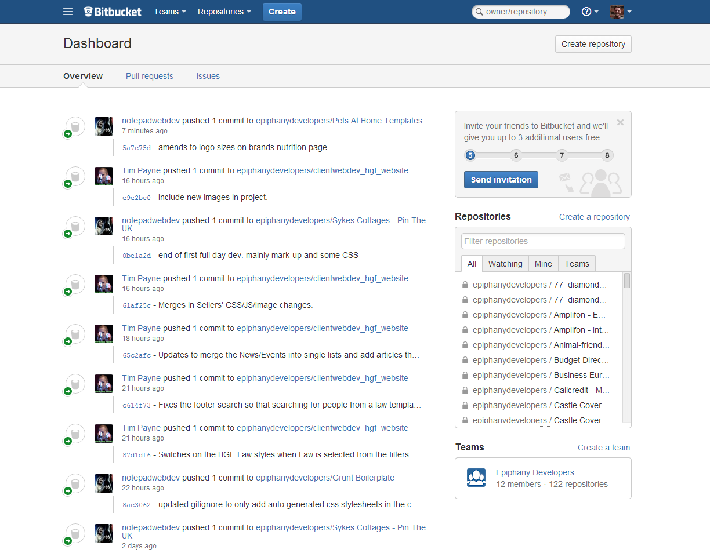

Grunt - Ugly But Beautiful
What Is Grunt?
- A Task Runner
- Written in Javascript
- Good for forgetful people
- Lots of applications
- Always evolving
Why Do We Use It?
- Setting up projects
Bitbucket
Why Do We Use It?
- Setting up projects
- Development process
Autoprefixer
.round {
transition: opacity 0.2s ease-in;
}
.round {
-webkit-transition: opacity 0.2s ease-in;
-moz-transition: opacity 0.2s ease-in;
-0-transition: opacity 0.2s ease-in;
transition: opacity 0.2s ease-in;
}
Live Reload
The lazy way to avoid pressing two keys.
Why Do We Use It?
- Setting up projects
- Development process
- Delivering perfect projects
Minification
Save between 20% and 80% of file size
.error {
color: #ff0000;
}
.error{color:#f00;}Stratus Deployment
- Add Bugherd code
- Send to server
Live Deployment
- Minify, compress
- Add version numbers
- Add Analytics and Linkstant code
Why Should I Care?
- Confidence
Why Should I Care?
- Confidence
Avoid unnecessary questions- Answer necessary questions
Why Should I Care?
- Confidence
Avoid unnecessary questions- Answer necessary questions
- Showing off
Other new stuff


We Need Your Help!
It's developing all the time, with the whole team contributing
Still getting to grips with it
Needs human involvement and checking
We're open to suggestions
What You Can Do For Us
Reassure clients
- Version control
- Task runner
- Build process
Let us know what we can do better
Reward us with compliments and chocolates